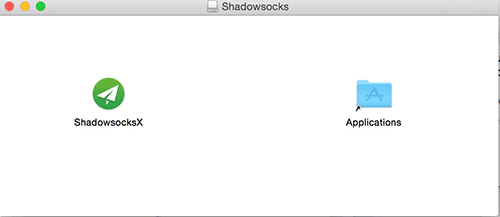
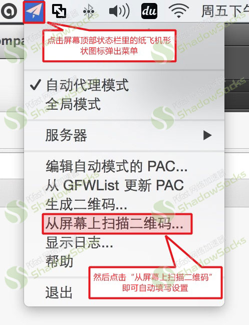

1下载 ShadowsocksX-2.6.3.dmg 客户端并安装，装完后打开，但不要设置，进行下一步。

2通过客服获取二维码，进行下一步。
3第一步安装好的shadowsocksX客户端在电脑屏幕最顶部状态栏会有一个纸飞机形状的图标点击它然后点击下拉菜单里的“扫描屏幕上的二维码”即可完成自动填写设置，只需点击确定即可，如下图所示：

常见问题：
如设置好之后仍然无法打开网站：
1、请使用safari浏览器尝试。
2、请尝试改为全局模式。
3、如果chrome等浏览器请删除任何与代理相关的插件例如红杏、autoproxy、proxysharp等等。
4、更换服务器后重试。